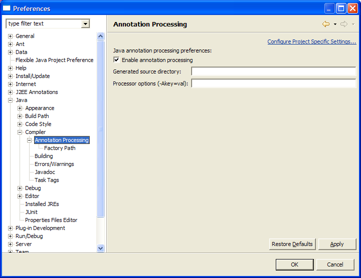
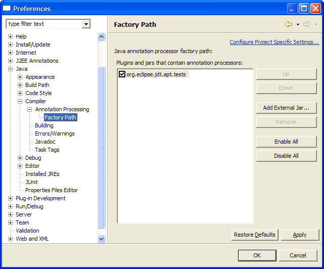

The APT plugin adds Java 5 annotation processing support to Eclipse, by running annotation processors written to use the Mirror APIs inside Eclipse.
These annotation processors will then get triggered as you type inside Eclipse, provide errors and warnings directly inside the editor, and producing normal build artifacts just as if you were running Sun's apt tool from the commandline.
For more detailed information about how the plugin works, you can view the JDT-APT project web site.
Next you need to enable annotation processing under Java->Compiler->Annotation Processing:

In this dialog you can also specify the generated source directory if desired, and provide any processor options that are necessary.
Note that "-Aclasspath" and "-Asourcepath" options are automatically passed to all your processors by eclipse, so it is unnecessary to provide those.
